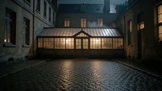
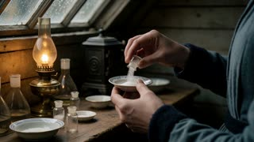
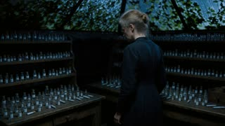
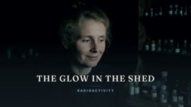
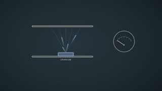
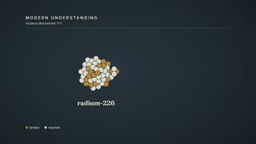
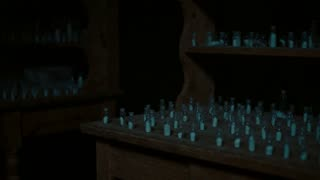

The Glow in the Shed: Marie Curie and Radioactivity
Chemistry / Physical Science, grades 9-12 (NGSS HS-PS1-8) · EN · report built 2026-11-17 16:09
Master: curie_radium_en_master.mp4, not published here · watch the web copy (re-encoded for this site, 19.1 MB)
87.9sruntime, 21 shots
45sinstructor on camera, lip-synced
47generation jobs run
0jobs recovered by retry
16/18takes passing QC first time
18/18shots approved for the edit
6/8presenter takes passing lip-sync QC
12/18takes in the edit made from today's files
934saverage presenter job
396saverage B-roll job
-16.0 LUFSmaster loudness
Rubric scorecard
warn Meets all 8 must items, 4 with notes
Should items: 4 warn, 3 fail. A must item that fails stops the lesson; a should item that fails goes on the fix list.
Reviewed by Carlton Shi (the author; no separate education or product reviewer on this lesson) on 2026-11-16: the delivered master; the notes are the flaws found in the 2026-11-16 audit, listed under Known limitations in README.md. Automatic results come from this lesson's QC records; a check that was skipped scores nothing. An item takes the worse of its automatic result and its review.
| Item, owner, level | Criterion | Result | How it was scored |
|---|---|---|---|
| E1 education must | The narration is accurate as recorded, and every name and term is pronounced right. | pass | vo 13/13 lines pass the Whisper check |
| E2 education must | Every fact in the narration and the graphics traces to a source in the treatment's fact-check table. | pass | review Every factual claim in the 13 lines and the 10 graphics appears in the treatment's Accuracy table with its source, most of them Curie's own account (Pierre Curie, 1923, chapter V). |
| E3 education must | No readable text, numbers or dials in the generated picture; every readable word comes from the graphics. | warn | text not run on any of 18 takes: OCR not installed review A blackboard with faint, unreadable chalk marks in S02 (3.92-5.83 s) and S05 (9.67-11.92 s), painted into both pinned keyframes. No readable generated text; every readable word comes from the graphics. |
| E4 education should | The picture shows what the narration says at that moment. | fail | review From 15.92 s the voice says "Her radium is glowing", but the vials in S06 and S07 do not visibly glow. Only S21 glows (from 82.88 s), and it reads blue-green rather than pale blue. |
| E5 education should | Each graphic lands on the words it illustrates and stays on screen long enough to read. | warn | review G03's label and current line arrive in its last 7 frames, so the label is barely up and the needle never moves; G04's "2× uranium" beat is on screen for 8 frames before its cut. |
| P1 product must | The presenter's lips match her voice within 2 frames on every presenter shot. | warn | sync 7 takes: 6 pass, 1 warn (S15) review Re-measured on the master: all 7 presenter shots within 2 frames (+0.04 to +1.83). S15 needed a 3-frame slip in conform. |
| P2 product must | The presenter is recognisably the same person in every shot, from both camera setups. | warn | face not run on any of 18 takes: face model not installed (7); exempt in shot list (6); no reference sheet in refs/ (3); no face expected at this size (2) review One presenter throughout, but setup B's face is longer and her hair lighter than A's; each B take opens with her turning from the side to the lens in about a second. |
| P3 product must | The master meets the delivery spec: length to the frame, 1920x1080 H.264 at 24 fps, -16 LUFS, true peak at or below -1.5 dBTP, captions. | pass | delivery 11/11 delivery checks pass |
| P4 product must | The lesson says plainly that it is AI-generated. | warn | review The end card says the instructor and the historical scenes are AI-generated, but it is the smallest text in the lesson (about 22 px high) and is fully up only from about 85.5 s. |
| P5 product should | Every take in the edit was made from the current approved inputs. | warn | inputs 18 takes: 12 pass, 6 warn (S12, S13, S14, S15, S18, S20) |
| C1 production must | No black, frozen or unreadable frames in what the audience sees. | pass | probe 18 takes: 18 pass black 18 takes: 15 pass; not run on 3: exempt in shot list freeze 18 takes: 17 pass; not run on 1: exempt in shot list |
| C2 production should | Characters match the style bible: Marie at 34, frizzy ash-blond hair in a low bun, a dark navy wool dress. | fail | review Marie reads 15 to 20 years older than 34 (S02, S03, S05, S07, S16); in S06 her hair is sleek and platinum; in the S04 and S10 inserts her dress reads light slate-blue. She is held by prompt and keyframes only: no LoRA, no reference sheet. |
| C3 production should | Light follows the style bible: one source per state (the oil lamp at camera left, then the faint pale-blue vials), and the presenter keyed from camera left like the lamp. | fail | review In the lamp-lit shots (S02-S05, S10) the glass roof is lit like overcast daylight; in S06 it brightens into daylight and green leaves after the lamp goes down. The presenter is keyed from camera right, opposite the lamp (A and B match each other). |
| C4 production should | Shots follow the shot list's framing and focus. | warn | review S16: Pierre is sharp, in three-quarter view, where the list asks for soft focus and his face turned away. S15 pushes in about 2x over 11 s where the list asks for a static medium close-up. |
| C5 production should | Sound is continuous: no dead air under picture. | warn | review The title card (S08, 18.42-21.42 s) has no ambience bed: the S07 bed stops at the cut and 3 s of room tone play under the title. |
Shots
| Shot | In / dur | VO | Engine | Take | QC | Notes | |
|---|---|---|---|---|---|---|---|
 | S01 gen EWS 24mm | 000.00 3.92s | L01 | h3_i2v 124f @ 24fps | v001 | probeblackfreezetextfaceinputs | Risk: Modern street furniture and signage creep in; keep facades blank. |
| S02 gen WS 28mm | 003.92 1.92s | L02 | h3_i2v 124f @ 24fps | v001 | probeblackfreezetextfaceinputs | Risk: Pouring liquid physics; keep the pour slow. | |
| S03 gen MCU 50mm | 005.83 1.92s | L02 | h3_i2v 124f @ 24fps | v001 | probeblackfreezetextfaceinputs | Risk: Identity drift in close shots; face QC gate applies. | |
 | S04 gen ECU 100mm | 007.75 1.92s | L02 | h3_i2v 124f @ 24fps | v001 | probeblackfreezetextfaceinputs | Risk: Hands. Generate four keyframes and select the anatomically clean one. |
| S05 gen MS 35mm | 009.67 2.25s | L03 | h3_i2v 124f @ 24fps | v001 | probeblackfreezetextfaceinputs | Risk: A lighting change inside one shot fights I2V models. Use first-last-frame (lit to dark) or cut on the action. | |
 | S06 gen WS 28mm | 011.92 4.00s | - | h3_i2v 124f @ 24fps | v001 | probeblackfreezetextfaceinputs | Risk: Models push 'glow' to neon green and add smoke. Near-black and nearly still by design, so the black and freeze checks are exempted and it is reviewed by eye. |
| S07 gen CU 85mm | 015.92 2.50s | L04 | h3_i2v 124f @ 24fps | v001 | probeblackfreezetextfaceinputs | Risk: Low light plus a face is where identity drifts most; review face score by hand. | |
 | S08 mograph | 018.42 3.00s | - | G01 TitleCard placed in the master | |||
| S09 presenter MS 35mm | 021.42 6.62s | L05 | h3_talk 175f @ 24fps · setup A | v002 of 2 | probeblackfreezesynctextfaceinputs rejected 1: sync | Risk: First time we see her: identity and lip sync both have to hold. | |
| S10 gen ECU 100mm | 028.04 2.88s | L06 | h3_i2v 124f @ 24fps | v002 of 2 | probeblackfreezetextfaceinputs rejected 1: freeze | Risk: Dials and stopwatch faces produce garbled numerals: keep them out of focus. | |
 | S11 mograph | 030.92 2.88s | L06 | G03 Electrometer placed in the master | |||
| S12 presenter MS 35mm | 033.79 7.67s | L07 | h3_talk 209f @ 24fps · setup A | v001 | probeblackfreezesynctextfaceinputs | Risk: Hands near the face can smear; keep gestures small and low. | |
| S13 presenter MCU 85mm | 041.46 4.83s | L08 | h3_talk 141f @ 24fps · setup B | v001 | probeblackfreezesynctextfaceinputs | ||
| S14 presenter MS 35mm | 046.29 5.58s | L09 | h3_talk 158f @ 24fps · setup A | v001 | probeblackfreezesynctextfaceinputs | ||
| S15 presenter MCU 85mm | 051.88 11.42s | L10 | h3_talk 294f @ 24fps · setup B | v001 | probeblackfreezesynctextfaceinputs | picture slipped +3 frames to the voice Risk: Longest take (about 12 s): watch for identity drift late in the clip. | |
| S16 gen WS 28mm | 063.29 2.75s | L11 | h3_i2v 124f @ 24fps | v001 | probeblackfreezetextfaceinputs | Risk: Second identity in frame; keeping Pierre soft and turned away keeps him out of the consistency budget. | |
| S17 gen CU 85mm | 066.04 2.75s | L11 | h3_i2v 124f @ 24fps | v001 | probeblackfreezetextfaceinputs | ||
| S18 presenter MS 35mm | 068.79 2.67s | L12 | h3_talk 124f @ 24fps · setup A | v001 | probeblackfreezesynctextfaceinputs | ||
 | S19 mograph | 071.46 5.33s | L12 | G08 ModernUnderstanding placed in the master | |||
| S20 presenter MCU 85mm | 076.79 6.08s | L13 | h3_talk 158f @ 24fps · setup B | v001 | probeblackfreezesynctextfaceinputs | ||
 | S21 gen MS 50mm | 082.88 5.00s | L13 | h3_i2v 141f @ 24fps | v001 | probeblackfreezetextfaceinputs |


Voiceover QC
| Lang | Line | Status | WER | Missing terms | Heard |
|---|---|---|---|---|---|
| en | L01 | pass | 0.00 | 1902, a leaky shed at a Paris science school. | |
| en | L02 | pass | 0.00 | For nearly four years, Marie Curie has been processing tons of ore here by hand. | |
| en | L03 | pass | 0.00 | One night, she turns down the lamp. | |
| en | L04 | pass | 0.00 | Her radium is glowing. | |
| en | L05 | pass | 0.00 | It began in 1896 when Henri Beck-Rell found that uranium gives off invisible rays. | |
| en | L06 | pass | 0.00 | Curie measured them with an electrometer, which detects the tiny current the rays create in air. | |
| en | L07 | pass | 0.00 | The strength depended only on how much uranium was present. Wet or dry, powder or solid, it didn't matter. | |
| en | L08 | pass | 0.00 | So the rays came from the atoms themselves, she named it radioactivity. | |
| en | L09 | pass | 0.00 | But pitch blend, a uranium ore was more radioactive than its uranium could explain. | |
| en | L10 | pass | 0.00 | Something else was inside. In 1898, the Curies announced two new elements, Polonium, for Marie's homeland, Poland, and radium, from the Latin for Ray. | |
| en | L11 | pass | 0.00 | Proving radium was real meant extracting it from the ore. That's the work we saw in the shed. | |
| en | L12 | pass | 0.05 | Today we know why it happens. Adams like radium have unstable nuclei, and as they decay, they release radiation. | |
| en | L13 | pass | 0.00 | Radioactivity comes from inside the atom. Curie proved it by measuring carefully and it earned her Nobel Prizes in two different sciences. |
Motion graphics
| Cue | Template | Layer | Shot | Timing |
|---|---|---|---|---|
| G01 | TitleCard | full | S08 | 18.42s · 3.00s |
| G02 | LowerThird | overlay | S09 | 21.83s · 4.00s |
| G03 | Electrometer | full | S11 | 30.92s · 2.88s |
| G04 | RayStrength | overlay | S12 | 33.79s · 7.67s |
| G05 | KineticWord | overlay | S13 | 44.62s · 1.67s |
| G06 | PitchblendeBars | overlay | S14 | 46.29s · 5.58s |
| G07 | ElementTiles | overlay | S15 | 51.88s · 11.42s |
| G08 | ModernUnderstanding | full | S19 | 71.46s · 5.33s |
| G09 | EndCard | overlay | S21 | 82.88s · 5.00s |
| G10 | LocationSuper | overlay | S01 | 0.50s · 3.00s |
Delivery QC
| duration | pass 87.875s, 2109 frames (plan 87.875s, 2109 frames) |
|---|---|
| size | pass 1920x1080 (delivery 1920x1080) |
| video codec | pass h264 High, yuv420p, bt709 (delivery h264 High, yuv420p, bt709) |
| frame rate | pass 24/1 average, 24/1 base (delivery 24 fps constant) |
| audio | pass aac 48000 Hz, 2 ch (delivery aac 48000 Hz, 2 ch) |
| loudness | pass -16.0 LUFS integrated (target -16.0 +/-1) |
| true peak | pass -2.4 dBTP (max -1.5) |
| black | pass none over 0.5s outside exempt shots |
| captions | pass 25 SRT cues, 25 VTT cues (script gives 25) |
| graphics | pass 10 cue(s) placed |
| voice | pass 13 line(s) laid |
| master | curie_radium_en_master.mp4 (86.7 MB, sha256 6d51fa9f4f68), not published here · web copy (19.1 MB, re-encoded) |
| burned | curie_radium_en_burned.mp4 (83.6 MB, sha256 f0de500ce47f), not published here |
| srt | curie_radium_en.srt (2.0 KB, sha256 3dc61ac22b08) |
| vtt | curie_radium_en.vtt (2.0 KB, sha256 d716179b7f39) |
| edl | curie_radium_en.edl (3.0 KB, sha256 850a53578ae7) |
| poster | curie_radium_en_poster.jpg (204.3 KB, sha256 a73cf72a9506) |